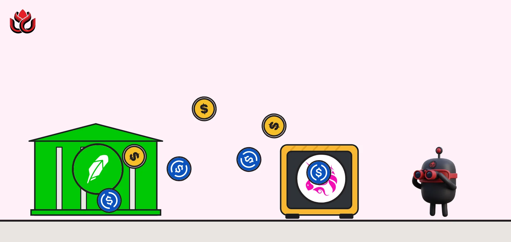
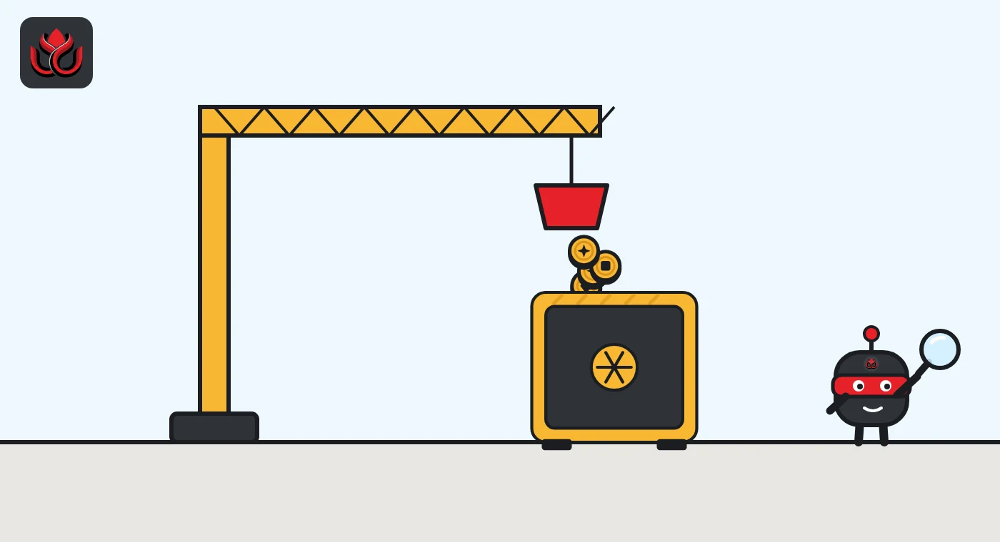
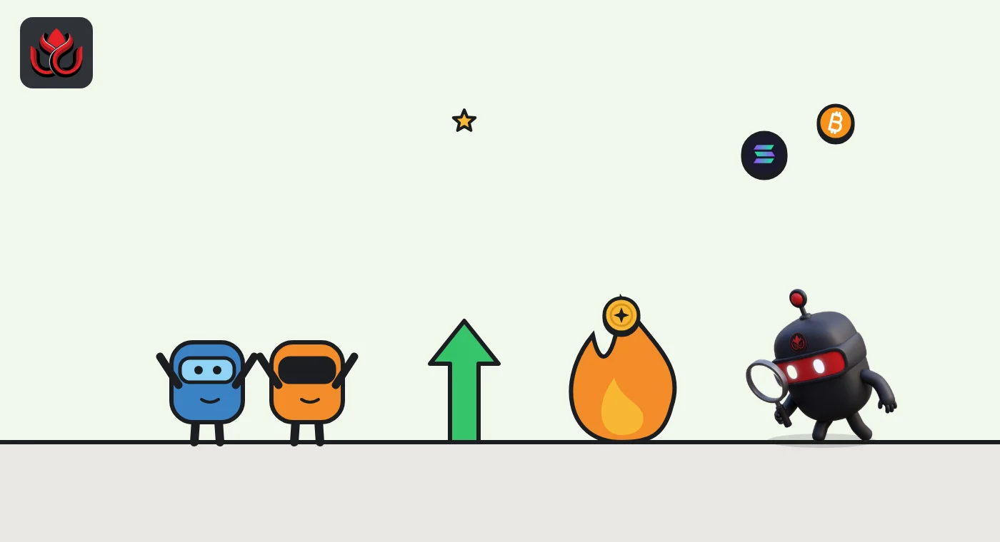

Uniswap opens the tool behind its UNI burns to any app. Robinhood takes USDC instead
TJAR, the system that turns Uniswap's protocol fees into UNI and burns it, is now open to everyone. It handled more than $15.3 million in a month, and its first outside user wants stablecoins, not UNI.

Key points
- Since October 29, 2026, any app can use TJAR, Uniswap's tool that converts a pile of fee tokens into one token of its choice. It runs on seven chains.
- The system handled more than $15.3 million in conversions in the month before launch. It was built first for Uniswap's own fees, which become UNI and are burned.
- Robinhood, the first partner, gets paid in USDC and USDG, so its fees add no UNI burn. A possible fee for the DAO exists but is switched off.
What Uniswap launched
Uniswap Labs said on October 29, 2026, that TJAR, its on-chain fee conversion system, is now available to any app, with Robinhood as the first partner. The system handled more than $15.3 million in conversions in the month before launch. The announcement pitches it simply: apps collect fees in whatever tokens their users trade, and get paid in the one token they choose. TJAR is live on seven chains, with more planned.
The tool already runs in production. The Token Jar framework was first built to process Uniswap's own protocol fees, the share of trading fees that goes to the protocol rather than to liquidity providers (the users who supply tokens to trading pools). For those fees, the chosen payout token is UNI and the destination is a burn address, which removes the UNI from supply, according to the developer docs.
How a token jar works
The problem TJAR solves is messy treasuries. An app that charges fees on swaps ends up holding small amounts of many tokens across many chains. Converting them usually means building custom infrastructure.
The steps, as set out in Uniswap's explainer and announcement, are short:
- The app deposits its fees into a jar and picks one payout token, a price and a destination, such as a treasury, a bridge or a burn address.
- Searchers, the bots that hunt for profitable on-chain trades, watch the jar. When its contents are worth more than the price, one of them pays the price in the chosen token.
- The jar releases everything inside to that searcher, and the payment goes to the app's destination.
The jar itself sets no market price. Searchers decide whether the trade is worth it, and competition between them narrows their margins. Setting up a jar takes one transaction, and the app can change the token, price or destination later, or lock them permanently.
On security, the docs say OpenZeppelin reviewed TJAR as a change set against the Uniswap protocol fee contracts it is based on. That earlier code had three more OpenZeppelin reviews and one by Cantina.

Robinhood signs on first
Robinhood is the launch partner. It uses TJAR across its supported chains for fees it collects through the Uniswap API, and its jars pay out in USDC and USDG, according to the Uniswap post. Fees are converted as they come in.
For Uniswap API integrators, the change is small. They can set a jar as the fee recipient in their quote request, and conversion happens without extra work. That spares third-party apps from building their own conversion systems.
What it means for UNI holders
TJAR opening up does not, by itself, burn more UNI. Other apps choose their own payout token and destination, so Robinhood's fees end up as stablecoins, not burned UNI.
The link to UNI is a switch that is currently off. According to the developer docs, Uniswap governance controls a fee controller that could set a protocol fee on TJAR releases and choose who receives it. The docs state plainly that no fee is set today.
In other words, the DAO, the UNI holders who vote on protocol decisions, owns a product that third parties now use for free, with a lever available if governance later decides to charge for it.

Everything else Uniswap Labs shipped since September
TJAR is one of several releases from Uniswap Labs since September, according to its blog:
- September 16: an explainer on the StablePair hook, which recalculates the fee on every swap between pegged assets. The same day, Uniswap was among the trading venues named at the launch of Arc, Circle's layer-1 network.
- October 2: SMBC Nikko, a Japanese securities firm, and Nethermind said they are building a DeFi gateway for Japanese investors on Uniswap v4, with hooks that run anti-money-laundering checks inside each pool. Completion is targeted for mid-2027.
- October 9: Unichain, Uniswap's own chain, began upgrading to OP Enterprise.
- October 14: the VolatilePair hook, a dynamic-fee design launching with ETH/USDC.
- October 22: aggregator hooks, which wrap outside liquidity sources into Uniswap v4 pools.
- October 28: developer analytics in the API dashboard.
Hooks are small add-on contracts that change how a v4 pool behaves, for example by moving the fee with market conditions. The common thread is that Uniswap Labs is trying to keep more value for liquidity providers and to sell its API and contracts to other businesses. The SMBC post noted that the Uniswap Protocol has handled more than $4.5 trillion in volume.
Timeline
Uniswap named among launch venues on Arc; StablePair hook explainer
SMBC Nikko and Nethermind announce a Japan DeFi gateway on Uniswap v4
TJAR opens to all apps, with Robinhood as first partner
Uniswap Labs publishes its TJAR technical explainer
LC Insight analysis
This section is our reading of the facts above, not a statement of fact.
- We think TJAR is Uniswap Labs turning internal plumbing into distribution. Every app that routes fees through a jar ties itself closer to Uniswap's contracts and API, and that matters more than the conversion volume.
- Expect a governance fight over the optional TJAR fee. If outside volume grows, UNI holders will ask why the DAO earns nothing from it, the same argument that produced the original protocol fee.
- Robinhood picking stablecoins shows what most apps want: clean dollar revenue. Anyone betting that outside users will add to UNI burns should take note.
What's next
- Names of the next TJAR integration partners
- Monthly conversion volume compared with the $15.3 million baseline
- Any Uniswap DAO proposal to activate a protocol fee on TJAR
Disclaimer. This article is based on public information and the sources listed below as of the update time shown. It is for information only and is not investment, legal or tax advice. Figures may change as companies and authorities publish new data.
Sources
- Uniswap Labs, TJAR: Onchain Fee Conversion for Any App (October 29, 2026)
- Uniswap Labs, How TJAR Works (October 30, 2026)
- Uniswap developer docs, TJAR overview
- Uniswap Labs, SMBC Nikko and Nethermind are building a DeFi gateway for Japan on Uniswap v4 (October 2, 2026)
- Uniswap Labs blog, index of posts
- Arc, Arc mainnet is live (September 16, 2026)